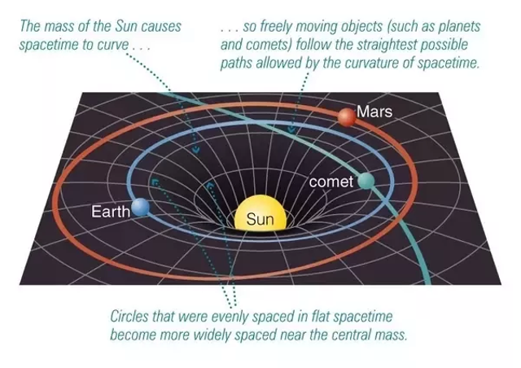
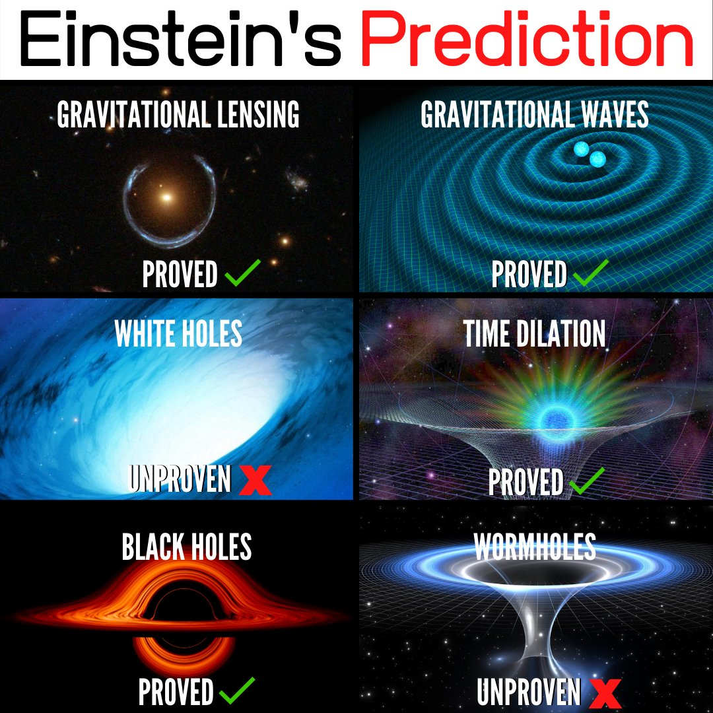

Theory of General Relativity
The theory of relativity, consists of two main parts: Special Relativity and General Relativity.
Special Relativity: This theory, published in 1905, fundamentally changed our understanding of space and time. It proposes two key ideas:
- The speed of light in a vacuum is always the same for everyone, regardless of their motion. This is a constant, denoted as 'c.'
- Space and time are interconnected into a four-dimensional continuum called spacetime. Special Relativity also introduced the famous equation E=mc², which shows the equivalence of energy (E) and mass (m).
The theory has some remarkable consequences, such as time dilation (time passing differently for objects in motion) and length contraction (objects appearing shorter when they move at high speeds). It also led to the famous twin paradox, where one twin ages less than the other if they travel at different speeds.
General Relativity: Published in 1915, this theory builds upon Special Relativity and focuses on gravity. Here are the key points:
- Gravity is not a force, as described by Isaac Newton, but rather a curvature of spacetime caused by mass and energy. Objects with mass, like the Earth, create a "dent" in spacetime.
- Other objects, like planets, stars, and even light, follow curved paths in this curved spacetime. This is why things appear to be attracted to one another.
General Relativity has been confirmed through various experiments and observations, including the bending of starlight by the Sun's gravity (gravitational lensing) and the precise predictions it makes about the behavior of objects in strong gravitational fields.
In essence, the theory of relativity revolutionized our understanding of the universe by showing that space and time are not absolute but are instead intertwined and affected by the presence of mass and energy. It has had profound implications for physics, astronomy, and our understanding of the cosmos.